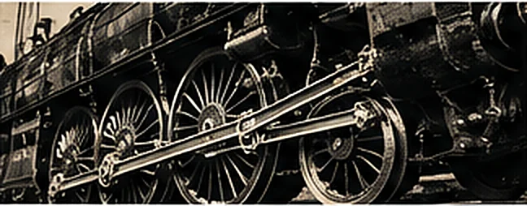

Every 18xx game turns on the same idea: railroads and a stock market on one table, and players who are investors before they are builders.1 Project 18XX starts there.
That is the reason it comes first at Ludum. The market of shared companies — where you can own part of a railroad you do not run, and run one you barely own — is the idea every later game here borrows, 20 Cosmos included.
A game about capital that wears out
Trains rust. The day a newer train is bought, older ones leave the board, and a company that was rich on paper discovers it has to buy again. It is the rule players remember, and the one that makes an 18xx game about time as much as money.

A round of Project 18XX has three movements:
- Stock rounds, where players buy and sell shares.
- Operating rounds, where each company builds, runs its trains, and pays out or withholds.
- Phase changes, when the first of a new train is bought and the board’s rules move on.
You can own part of a railroad you do not run, and run one you barely own.
Three tables
Project 18XX is set up at one of three tables: 18XX, the map and tile tray as printed; 18XX+, a larger map for more players or less blocking; and A Level Playing Field, a rebalanced map with additional tiles, private companies and railroads. The host chooses, and can add house rules — Gentle Rust among them, which gives a rusting train one last Operating Round turn.
It is being built for play on Juno, and its development is logged here as it happens.
| Train | Cost | Rusts when |
|---|---|---|
| 2 | $80 | The first 4 is bought |
| 3 | $180 | The first 6 is bought |
| 4 | $300 | The first D is bought |
| 5 | $450 | Never |
| 6 | $630 | Never |
| D | $1,100 | Never |
The standard table. Under Gentle Rust a rusting train gets one last Operating Round turn before it goes.
What it doesn’t promise yet
Release dates, prices, player counts online: none of these are set, so none of them are on this page. When they are, they will be in a devlog first.
- “18xx” is what players call the family of railway-and-stock games, after the years most of them take as their titles. The family began with Francis Tresham’s 1829 (1974). Back